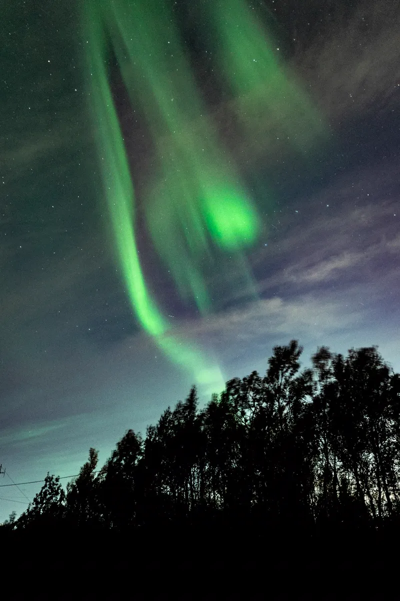
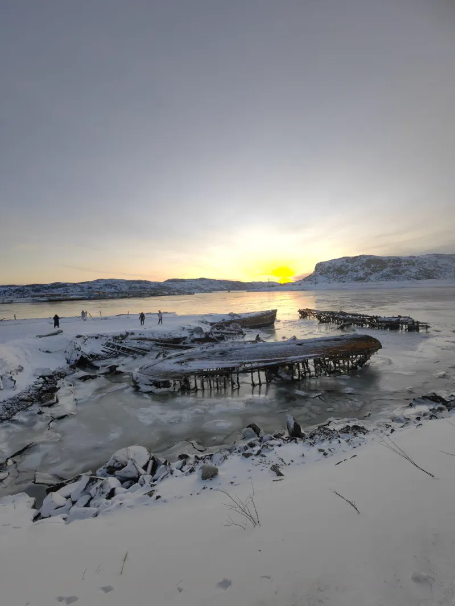
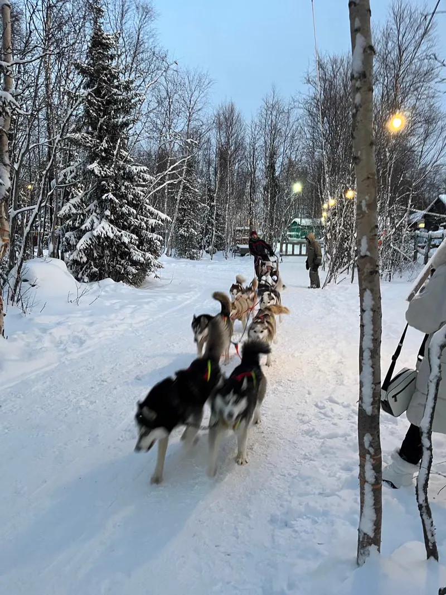
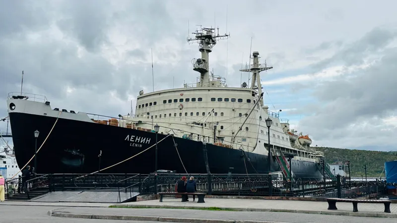
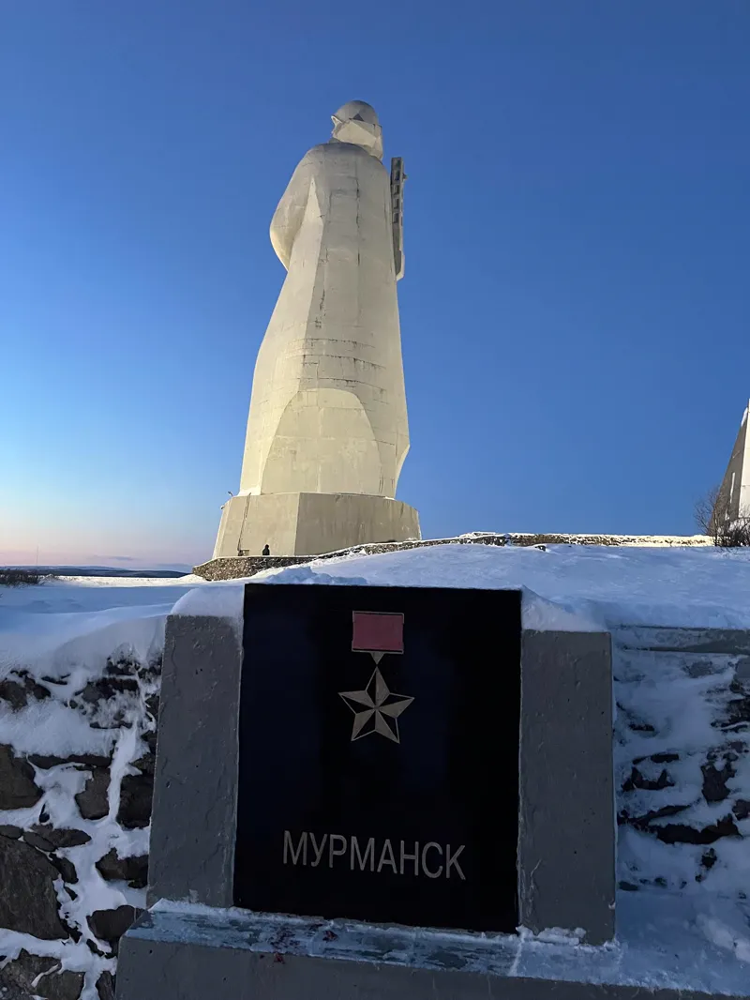

تقع مورمانسك شمال الدائرة القطبية الشمالية. ويقصدها معظم الزوار لمشاهدة الشفق القطبي.
هل أخبرك بأفضل طريقة لرؤيتها؟
مورمانسك
القطب الشمالي وأضواء الشفق القطبي
أكبر مدينة شمال الدائرة القطبية الشمالية، حيث يتلألأ الشفق القطبي في سمائها من سبتمبر إلى مارس.
مختارات ساشا
-

أضواء الشفق القطبيمن سبتمبر إلى مارس، في الليالي الصافية والمظلمة بعيداً عن أضواء المدينة.ساعتان أو ثلاث ساعات -

تيريبيركاقرية صيد على بحر بارنتس، عند حافة المحيط المتجمد الشمالي.يوم كامل -

كلاب الهاسكي وحيوانات الرنةركوب الزلاجات والتعرف على ثقافة شعب السامي الأصلية خارج المدينة.نصف يوم -

كاسحة الجليد لينينأول سفينة سطح تعمل بالطاقة النووية في العالم، وقد تحولت اليوم إلى متحف.ساعتان أو ثلاث ساعات -

نصب أليوشا التذكاريتمثال عملاق لجندي يرتفع فوق الخليج، مع إطلالة ساحرة على الميناء.ساعتان أو ثلاث ساعات
صور من الطريق
صور حقيقية من رحلات ROTW.
أفضل وقت للزيارة
من سبتمبر إلى مارس لمشاهدة الشفق القطبي. ومن أواخر مايو إلى يوليو للاستمتاع بشمس منتصف الليل.
| الفصل | الأشهر | أجواء الطقس |
|---|---|---|
| الشتاء | ديسمبر–فبراير | الليل القطبي في ديسمبر، وظهور الشفق في الليالي الصافية. |
| الربيع | مارس–مايو | عودة الثلوج والضياء، وينتهي موسم الشفق في مارس. |
| الصيف | يونيو–أغسطس | شمس منتصف الليل التي تدوم حتى أواخر يوليو. |
| الخريف | سبتمبر–نوفمبر | انطلاق موسم الشفق وتلون أراضي التندرا باللون الأحمر. |
خطة ليومين
قضاء ليلتين أو ثلاث يمنحك أفضل فرصة لمصادفة سماء صافية.
-
1
المدينة وأول جولة ليلية نصب أليوشا التذكاري · كاسحة الجليد لينين · أضواء الشفق القطبي
-
2
بحر بارنتس تيريبيركا · كلاب الهاسكي وحيوانات الرنة
كيفية الوصول
نحو ساعتين ونصف بالطائرة من موسكو.
تحدد ROTW أسعار كل رحلة وفقاً لتواريخ سفرك ومستوى الفنادق وعدد أفراد مجموعتك. ثبّت ما يعجبك وأرسله إليّ، وسأوافيك بعرض سعر حقيقي.
— ساشا
أسئلة شائعة
هل رؤية الشفق القطبي مضمونة؟
لا يمكن لأحد ضمان ذلك؛ فالأمر يتوقف على صفاء السماء والنشاط الشمسي، لذا فإن قضاء ليلتين أو ثلاث يزيد من فرصك كثيراً.
كم تبلغ درجة البرودة؟
تتراوح في الغالب بين 10 إلى 20 درجة تحت الصفر في الشتاء، وتكون أشد برودة قرب البحر مع الرياح. وتستطيع ROTW توفير ملابس دافئة ومجهزة.
ما هو الليل القطبي؟
في ديسمبر وأوائل يناير لا تشرق الشمس على الإطلاق، مع وجود ساعات قليلة من الشفق الأزرق الخافت نهاراً.